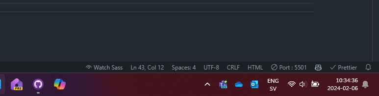

Genererad CSS
Vi kan låta verktyg generera CSS åt oss. Detta skapar möjligheter att
skriva CSS på ett enklare, snabbare och mer kontrollerat sätt. Några
fördelar med genererad CSS är bland annat:
- Nestade selektorer
- Dela upp CSS i flera filer
-
Autogenererade "vendor prefix's". Alltså backup-CSS i de fall då
webbläsare funkar olika
Förbered dig på genererad CSS:
-
För att detta ska funka behöver vi först installera ett tillägg.
-
När tillägget är installerat behöver du skapa en fil som heter
style.scss
Det är i den här filen som du kommer skria din CSS i framtiden. Skulle
du vilja ha fler filer så ska dom heta:
_namn.scss
-
Du startar tillägget genom att trycka på Watch Sass i botten av
VS Code.

Om du vid det här laget fastnar eller är tveksam bör du be om hjälp.
Du är nu redo att generera CSS med nästa övning